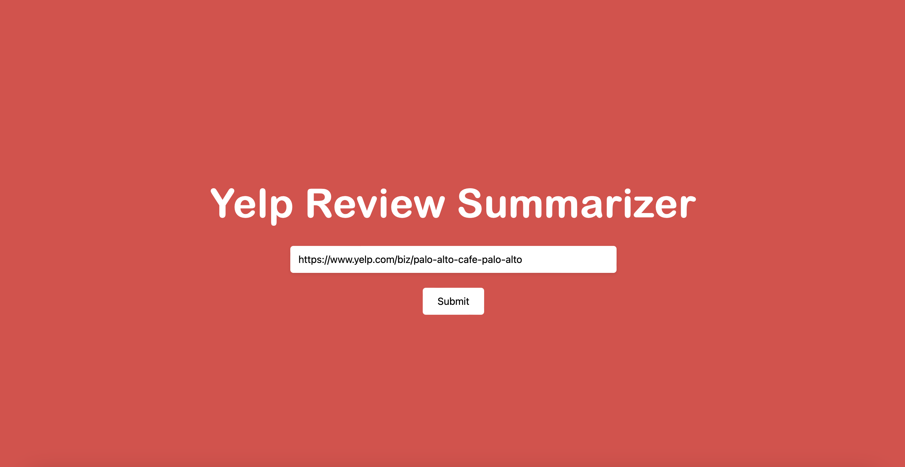
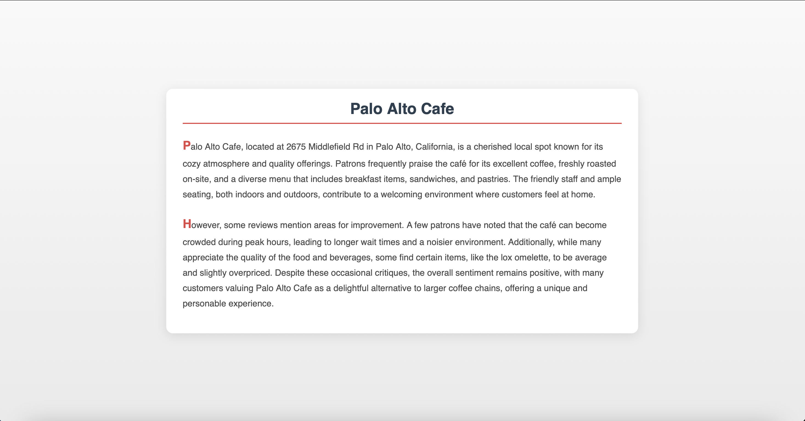

YelpHelper - Decision Processes Made Simple
Yelp reviews are helpful, but sorting through dozens—or even hundreds—of them can be overwhelming.
YelpHelper streamlines the process, providing quick summaries of a business’s reviews so you can make decisions
faster.
YelpHelper is a simple web application with a backend built using Python and leveraging Flask for handling user
requests and routing. It uses Python libraries such as BeautifulSoup to extract review data from Yelp pages and
integrates OpenAI’s GPT API to process data into concise summaries. The frontend is implemented with HTML, CSS,
and JavaScript, providing users with a simple, responsive interface.
Here's how it works:
Parsing Reviews
When you input a Yelp page URL, YelpHelper iteratively parses through each page of reviews left on a Yelp business,
gathering comprehensive text and ratings data from every review. This ensures that the app works directly with the
most up-to-date review data for a business.

Generating Summaries:
Once the reviews are collected, OpenAI’s GPT API processes the data, pulling out common themes and summarizing
the general sentiment. Whether it’s praise for great customer service or complaints about long wait times,
YelpHelper captures the key takeaways for you.
The app then organizes the summary neatly, breaking it into clear sections for positive and negative feedback,
recurring themes, and overall sentiment. This makes it easy to absorb the key details at a glance.

Try it for yourself: http://ihsoop.pythonanywhere.com